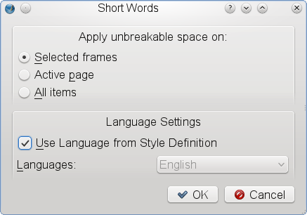

"Umbruchkontrolle für Abkürzungen" ist ein spezielles Plug-in, das geschützte Leerzeichen vor oder nach Abkürzungen einfügt.
Die Handhabung hängt von den typographischen Regeln einer Sprache ab. Im Tschechischen, Polnischen und Slowakischen ist es beispielweise unzulässing, Konjunktionen, die nur aus einem Wort bestehen, am Ende einer Zeile stehen zu lassen, die länger als 25 Zeichen ist. Ein verbreitetes Problem sind Maß- und Gewichtangaben, bei denen aus offensichtlichen Gründen, ein geschütztes Leerzeichen zwischen der Zahl und der verwendeten Einheit stehen sollte. Darüber hinaus sollten Abkürzungen für akdemische Titel und militärische Rangbezeichnungen nicht vom Namen ihrer Träger getrennt werden.
Auch wenn Scribus nicht jeden nationalen Standard berücksichtigen kann, hat sich einer der Scribus-Entwickler , Petr Vaněk, entschlossen, Scribus-Anwendern ein Plug-in zur Verfügung zu stellen, das leicht an die eigenen Bedürfnisse angepaßt werden kann.
Der Screenshot enthält einen Beispieltext, der eine Abkürzung vor dem Anwenden des Plug-ins zeigt.
Textbeispiel vor dem Ausführen des Plug-ins
|
Derselbe Text, nachdem ein geschütztes Leerzeichen eingefügt wurde. Das rot markierte Wort "Mr" steht nun in der nächsten Zeile, weil das normale Leerzeichen durch ein geschütztes ersetzt wurde.
Textbeispiel nach dem Ausführen des Plug-ins
 |
Führen Sie Extras > Umbruchkontrolle für Abkürzungen aus.
Die Umbruchkontrolle für Abkürzungen in Scribus
 |
Der Dialog für die Umbruchkontrolle
|  |
Die Umbruchkontrolle arbeitet mit einer systemweiten Konfigurationsdatei namens scribus-short-words.rc, die unter Linux und Unix normalerweise unter $prefix/lib/scribus/plugins gespeichert ist (was das tatsächliche Verzeichnis ist, hängt davon ab, wie Sie oder Ihr Distributor Scribus installiert haben.). Die Konfigurationsdatei ist selbsterklärend. Sie besteht aus einer Liste von Abkürzungen in einer bestimmten Sprache. Vor oder nach der Abkürzung befindet sich eine Abkürzung. Abkürzungen und Leerzeichen werden durch Kommas getrennt. Der Platz des Leerzeichens zeigt dem Plug-in an, ob vor oder nach der Abürzung ein geschütztes Leerzeichen eingefügt werden soll. Jede Zeile der Konfigurationsdatei muß mit der Sprache beginnen, für die sie bestimmt ist, z.B. en für Englisch oder cs für Tschechisch:
# English stuff START here en=Dr. ,Dr ,Mr. ,Mr ,Mrs. ,Mrs ,Ms. ,Ms ,Prof. ,Prof ,Rev. ,Rev , en= Kg, kg, g, mg, oz, lb, cwt, km, Km, m, cm, mm, # Czech short words START here ## hanging conjunctions cs=K ,k ,S ,s ,V ,v ,Z ,z ,O ,o ,U ,u ,I ,i ,A , ## physics and math cs= kg, g, m, cm, mm, l, hl, s, %,
Wenn Sie eigene Abkürzungslisten verwenden wollen, z.B. für eine neue Sprache, erzeugen Sie selbst eine Konfigurationsdatei und speichern diese als scribus-short-words.rc im ~/.scribus-Verzeichnis. Selbstverständlich können Sie auch die ursprüngliche Konfigurationsdatei ersetzen und Ihre Version systemweit zur Verfügung stellen.
Der Autor brennt darauf, die globale Konfigurationsdatei Ihren Wünschen entsprechend zu erweitern. Teilen Sie ihm Abkürzungen und Standards aus Ihrer Sprache mit.
Short Words for Scribus Copyright 2003, 2004 Petr Vaněk, <petr@yarpen.cz>
This program is free software; you can redistribute it and/or modify it under the terms of the GNU General Public License as published by the Free Software Foundation; either version 2 of the License, or (at your option) any later version.
This program is distributed in the hope that it will be useful, but WITHOUT ANY WARRANTY; without even the implied warranty of MERCHANTABILITY or FITNESS FOR A PARTICULAR PURPOSE. See the GNU General Public License for more details.
You should have received a copy of the GNU General Public License along with this program; if not, write to the Free Software Foundation, Inc., 51 Franklin Street, Fifth Floor, Boston, MA 02110-1301, USA.
Document Copyright © 2004 Petr Vaněk, Maciej Hanski, under the opencontent.org license included with these documents with Elected Option IV